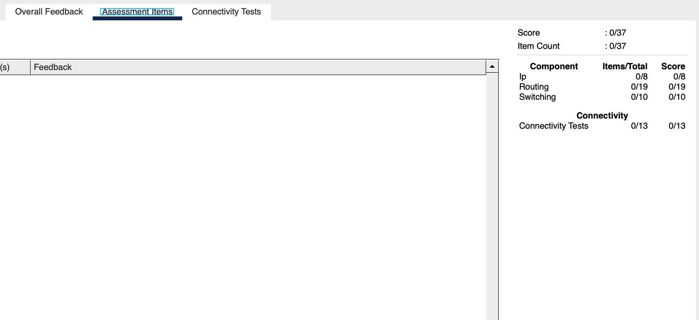
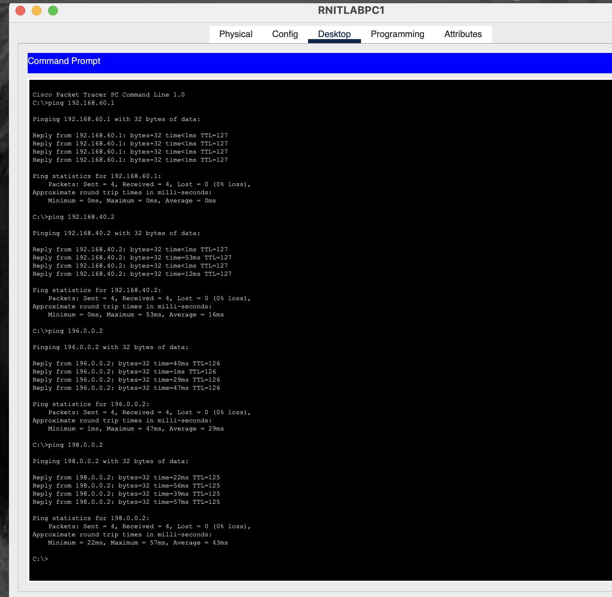
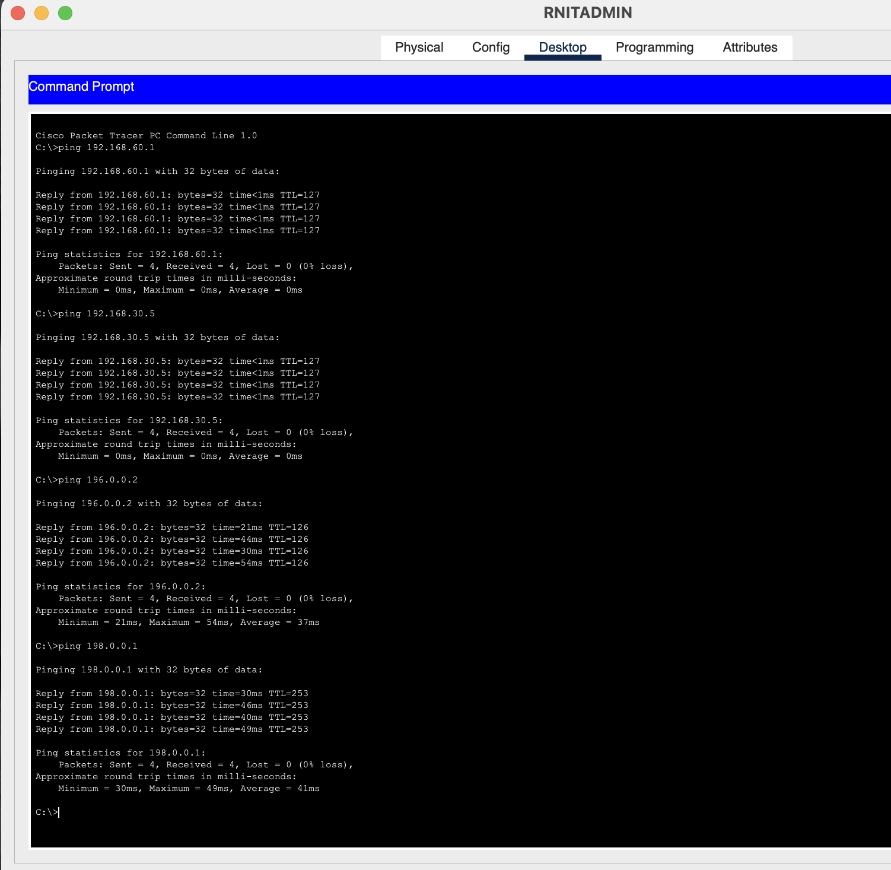
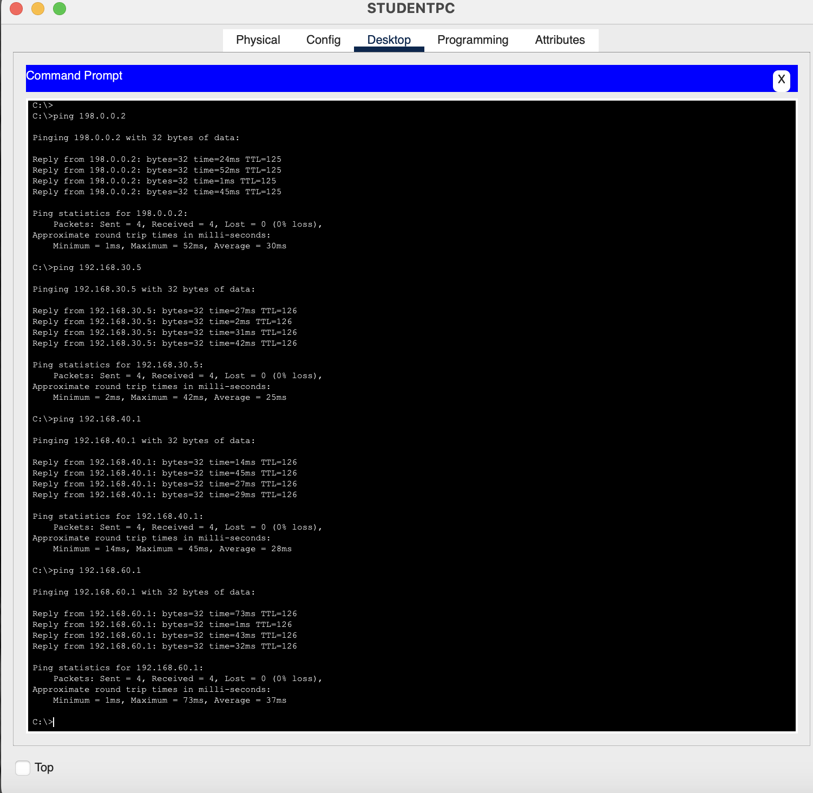

Evaluation
The Packet Tracer file that has been provided contains the automated test cases. As you progress with the task, the evaluation is made automatically, and the score is assigned accordingly. A total of 37 points are awarded. Figure 1 shows the breakdown of the scores, which you can always check by clicking the "check score".

In short, all the network components should be able to communicate with each other as shown in Figures 2, 3, and 4, respectively.



If you have connected everything correctly and are able to communicate across the network, but the test cases still fail, it is fine.